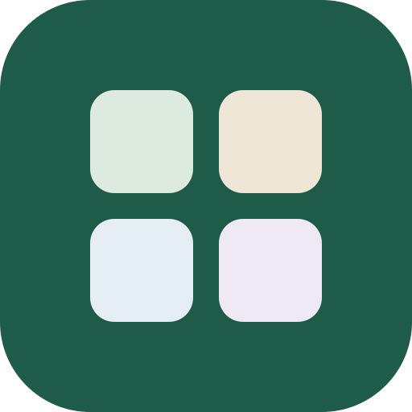
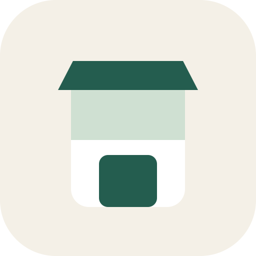
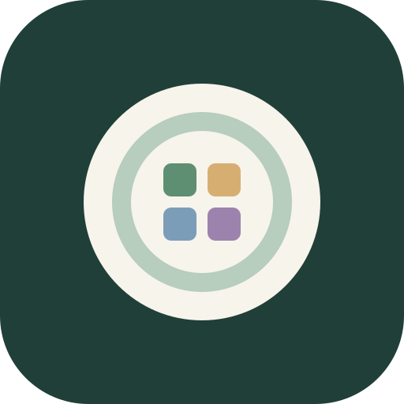
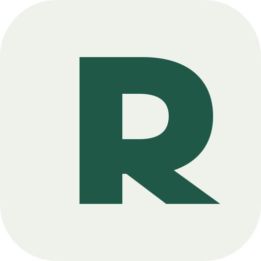
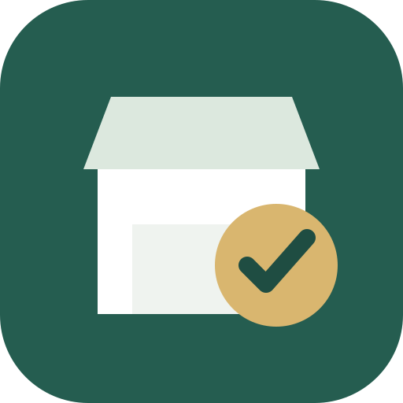
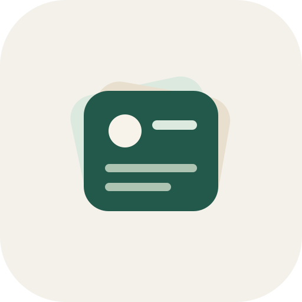
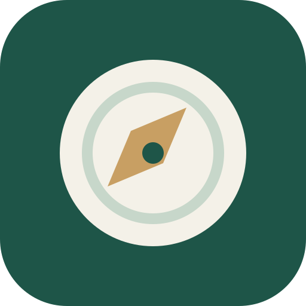
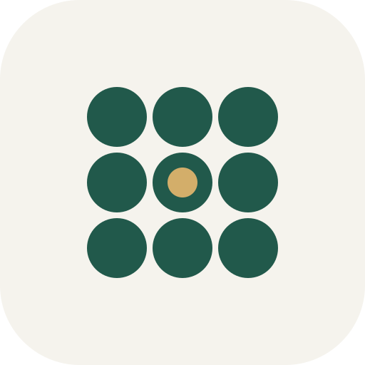

A｜4ブロック
統合管理と、機能を自由に並べるホーム画面を直接表現。
店舗運営アプリの方向性を比較するための初期候補です。どれも既存ブランドのロゴを使わず、スマホの小さいアイコンでも判別しやすい形にしています。選定前なので、現在の本番アイコンは変更していません。

統合管理と、機能を自由に並べるホーム画面を直接表現。

飲食店らしさが最も強く、現場スタッフにも用途が伝わりやすい。

「食」と「管理システム」を一つの記号にまとめた案。

アプリ名が固まった後のブランド展開に向く、シンプルな案。

日々の現場管理・確認・運営品質を前面に出した実務型。

必要な機能を追加・入替できる、柔軟なホーム構成を表現。

経営判断・全体把握・「次に何を見るか」を示す管理者寄り。

9つの機能ブロックとスマホホームの直感性を最も抽象的に表現。